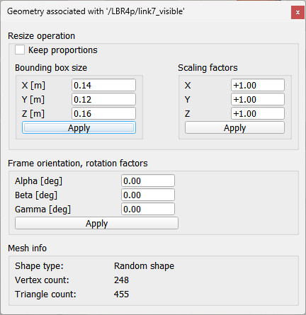

|
Shape geometry dialogThe shape geometry dialog is part of the shape dialog. The dialog allows to view a geometry associated with a shape, and to modify it to a certain extent. It displays the number of vertices and triangles, and the size of the shape's bounding box. The number of vertices and triangles of a mesh is directly linked to the rendering and calculation times (e.g. during collision detection or distance calculation), and the more vertices/triangles a mesh has, the slower the simulation or scene display will be. The dialog allows to scale a shape along the x-, y- or z-axes. Remember however that some primitive shapes have restrictions regarding non-uniform scaling.  [Shape geometry dialog] |